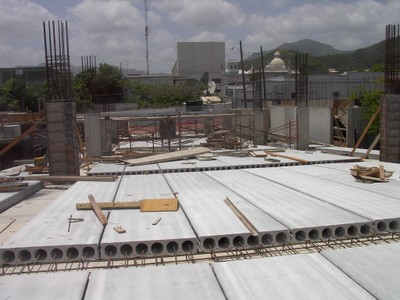

Piso de concreto prefabricado sin cubierta de concreto reforzado [FC4]
Unidades de concreto prefabricado sin cubierta de concreto reforzado. Unidades prefabricadas incluyen forjados alveolares, forjados sólidos o sistemas de viguetas de concreto prefabricado con rellenos de madera o concreto .

Losas alveolares de concreto prefabricado(tropicalconcrete.com)

Pisos de concreto compuestos por losas alveolares con conexiones inadecuadas que colapsaron en el terremoto de 2008 de Wenchuan, China (J. Dai)

Losa hueca de hormigón prefabricado soportada por muros de bloque de concreto, Canada (J. Adams)